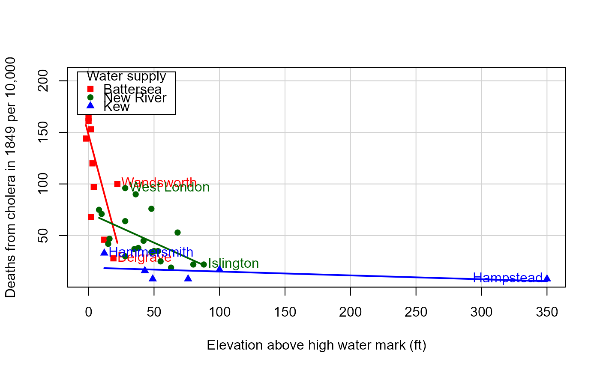
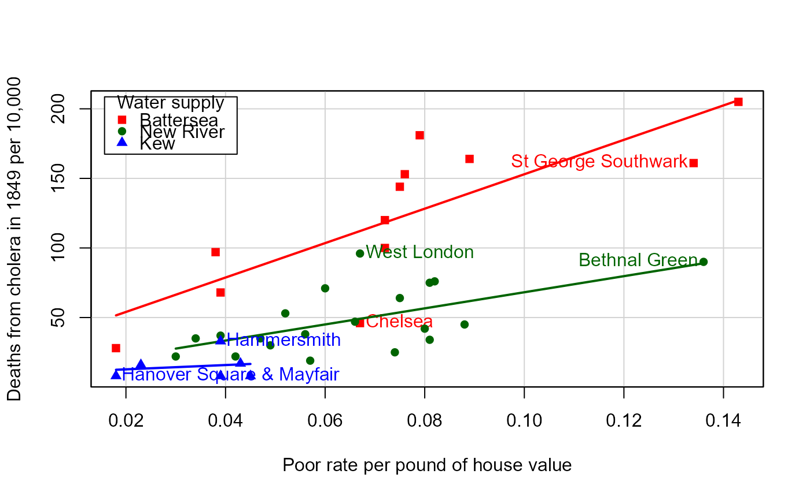

William Farr's Data on Cholera in London, 1849
Cholera.RdIn 1852, William Farr, published a report of the Registrar-General on mortality due to cholera in England in the years 1848-1849, during which there was a large epidemic throughout the country. Farr initially believed that cholera arose from bad air ("miasma") associated with low elevation above the River Thames. John Snow (1855) later showed that the disease was principally spread by contaminated water.
This data set comes from a paper by Brigham et al. (2003) that analyses some tables from Farr's report to examine the prevalence of death from cholera in the districts of London in relation to the available predictors from Farr's table.
Usage
data("Cholera")Format
A data frame with 38 observations on the following 15 variables.
districtname of the district in London, a character vector
cholera_dratedeaths from cholera in 1849 per 10,000 inhabitants, a numeric vector
cholera_deathsnumber of deaths registered from cholera in 1849, a numeric vector
popnpopulation, in the middle of 1849, a numeric vector
elevationelevation, in feet above the high water mark, a numeric vector
regiona grouping of the London districts, a factor with levels
WestNorthCentralSouthKentwaterwater supply region, a factor with levels
BatterseaNew RiverKew; see Detailsannual_deathsannual deaths from all causes, 1838-1844, a numeric vector
pop_denspopulation density (persons per acre), a numeric vector
persons_housepersons per inhabited house, a numeric vector
house_valppaverage annual value of house, per person (pounds), a numeric vector
poor_ratepoor rate precept per pound of house value, a numeric vector
areadistrict area, a numeric vector
housesnumber of houses, a numeric vector
house_valtotal house values, a numeric vector
Details
The supply of water was classified as “Thames, between Battersea and Waterloo Bridges”
(central London),
“New River, Rivers Lea and Ravensbourne”, and “Thames, at Kew and Hammersmith”
(western London).
The factor levels use abbreviations for these.
The data frame is sorted by increasing elevation above the high water mark.
Source
Bingham P., Verlander, N. Q., Cheal M. J. (2004). John Snow, William Farr and the 1849 outbreak of cholera that affected London: a reworking of the data highlights the importance of the water supply. Public Health, 118(6), 387-394, Table 2. (The data was kindly supplied by Neville Verlander, including additional variables not shown in their Table 2.)
References
Registrar-General (1852). Report on the Mortality of Cholera in England 1848-49, W. Clowes and Sons, for Her Majesty's Stationary Office. Written by William Farr. https://ia800309.us.archive.org/22/items/b24751297/b24751297.pdf The relevant tables are at pages clii -- clvii.
Examples
data(Cholera)
# plot cholera deaths vs. elevation
plot(cholera_drate ~ elevation, data=Cholera,
pch=16, cex.lab=1.2, cex=1.2,
xlab="Elevation above high water mark (ft)",
ylab="Deaths from cholera in 1849 per 10,000")
# Farr's mortality ~ 1/ elevation law
elev <- c(0, 10, 30, 50, 70, 90, 100, 350)
mort <- c(174, 99, 53, 34, 27, 22, 20, 6)
lines(mort ~ elev, lwd=2, col="blue")
# better plots, using car::scatterplot
if(require("car", quietly=TRUE)) {
# show separate regression lines for each water supply
scatterplot(cholera_drate ~ elevation | water, data=Cholera,
smooth=FALSE, pch=15:17,
id=list(n=2, labels=sub(",.*", "", Cholera$district)),
col=c("red", "darkgreen", "blue"),
legend=list(coords="topleft", title="Water supply"),
xlab="Elevation above high water mark (ft)",
ylab="Deaths from cholera in 1849 per 10,000")
scatterplot(cholera_drate ~ poor_rate | water, data=Cholera,
smooth=FALSE, pch=15:17,
id=list(n=2, labels=sub(",.*", "", Cholera$district)),
col=c("red", "darkgreen", "blue"),
legend=list(coords="topleft", title="Water supply"),
xlab="Poor rate per pound of house value",
ylab="Deaths from cholera in 1849 per 10,000")
}
#>
#> Attaching package: 'car'
#> The following object is masked from 'package:dplyr':
#>
#> recode


#> Hammersmith Hanover Square & Mayfair St George Southwark
#> 1 3 4
#> West London Bethnal Green Chelsea
#> 5 9 10
# fit a logistic regression model a la Bingham etal.
fit <- glm( cbind(cholera_deaths, popn) ~
water + elevation + poor_rate + annual_deaths +
pop_dens + persons_house,
data=Cholera, family=binomial)
summary(fit)
#>
#> Call:
#> glm(formula = cbind(cholera_deaths, popn) ~ water + elevation +
#> poor_rate + annual_deaths + pop_dens + persons_house, family = binomial,
#> data = Cholera)
#>
#> Coefficients:
#> Estimate Std. Error z value Pr(>|z|)
#> (Intercept) -5.1293609 0.1042127 -49.220 < 2e-16 ***
#> waterNew River -0.5201675 0.0249913 -20.814 < 2e-16 ***
#> waterKew -0.9171423 0.0502833 -18.240 < 2e-16 ***
#> elevation -0.0096775 0.0006030 -16.049 < 2e-16 ***
#> poor_rate 8.8410946 0.4027480 21.952 < 2e-16 ***
#> annual_deaths 0.0001616 0.0004751 0.340 0.734
#> pop_dens 0.0008362 0.0001700 4.919 8.68e-07 ***
#> persons_house -0.0089920 0.0123204 -0.730 0.465
#> ---
#> Signif. codes: 0 '***' 0.001 '**' 0.01 '*' 0.05 '.' 0.1 ' ' 1
#>
#> (Dispersion parameter for binomial family taken to be 1)
#>
#> Null deviance: 6959.0 on 37 degrees of freedom
#> Residual deviance: 1054.5 on 30 degrees of freedom
#> AIC: 1349
#>
#> Number of Fisher Scoring iterations: 4
#>
# odds ratios
cbind( OR = exp(coef(fit))[-1], exp(confint(fit))[-1,] )
#> Waiting for profiling to be done...
#> OR 2.5 % 97.5 %
#> waterNew River 0.5944210 0.5659523 6.242020e-01
#> waterKew 0.3996595 0.3618617 4.407120e-01
#> elevation 0.9903692 0.9891942 9.915349e-01
#> poor_rate 6912.5550001 3134.9232272 1.520140e+04
#> annual_deaths 1.0001616 0.9992299 1.001093e+00
#> pop_dens 1.0008365 1.0005029 1.001170e+00
#> persons_house 0.9910483 0.9673772 1.015244e+00
if (require(effects)) {
eff <- allEffects(fit)
plot(eff)
}
#> Loading required package: effects
#> lattice theme set by effectsTheme()
#> See ?effectsTheme for details.